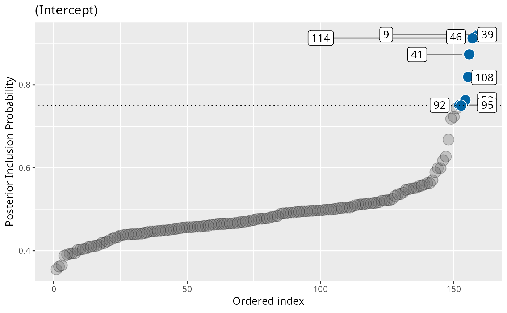
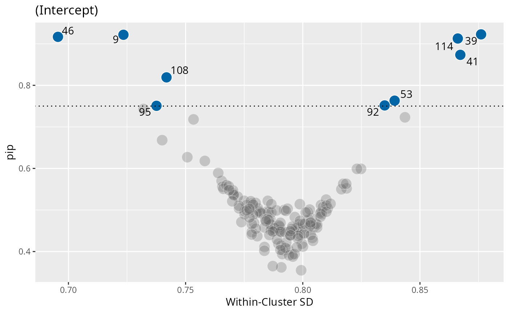

Main function to set up and run parallel MCMC using nimble and future. ivd computes a mixed effects location and scale model with Spike and Slab regularization on the scale random effects.
Source: R/ivd.R
ivd.RdMain function to set up and run parallel MCMC using nimble and future.
ivd computes a mixed effects location and scale model with Spike and Slab regularization
on the scale random effects.
Usage
ivd(
location_formula,
scale_formula,
data,
niter,
nburnin = NULL,
WAIC = TRUE,
workers = 4,
chains = NULL,
n_eff = "local",
ss_prior_p = 0.5,
priors = list(),
family = c("gaussian", "student"),
thin = 1,
return_logLik = FALSE,
seed = NULL,
progress = interactive(),
...
)Arguments
- location_formula
A formula for the location model
- scale_formula
A formula for the scale model
- data
Data frame in long format for analysis
- niter
Total number of MCMC iterations after burnin
- nburnin
Number of burnin iterations, defaults to the same as niter
- WAIC
Compute WAIC, defaults to 'TRUE'
- workers
Number of parallel R processes the chains are distributed over. Defaults to 4. Capped at
chains(extra workers would idle).- chains
Number of MCMC chains. Defaults to
workers(the historical one-chain-per-worker behaviour). Whenchains > workers, each worker compiles the model once and runs its chains sequentially on the compiled object -- extra chains cost sampling time but no extra compilation; chains after a worker's first warm-start from the previous chain's state (absorbed by the burnin).- n_eff
Use stan::monitor function or built local: 'stan' vs. 'local'
- ss_prior_p
Prior inclusion probability. Defaults to '.5'.
- priors
Optional named list overriding the prior hyperparameters. The distribution families are fixed (normal for fixed effects, half-t for the random-effect SDs, LKJ for their correlation); any subset of their hyperparameters can be changed:
beta_intercept:c(mean = , sd = )for the location intercept. Default: empirical,mean(Y)and3*sd(Y).beta:c(mean = 0, sd = 1000)for the remaining location coefficients.zeta:c(mean = 0, sd = 3)for the scale coefficients (log-SD scale).sigma_rand:c(df = 3, scale = 1)for the half-t on the random-effect SDs.lkj_eta:1, the LKJ shape for the random-effect correlation matrix (larger favours weaker correlations).
Partial specifications are filled with the defaults, e.g.
priors = list(zeta = c(sd = 1))only tightens the scale coefficients. Withfamily = "student",nu = c(shape = 2, rate = 0.1)sets the gamma prior of the degrees of freedom (seefamily). The prior inclusion probability of the spike-and-slab has its own argument,ss_prior_p.- family
Likelihood for the observations:
"gaussian"(default) or"student"for a student-t with estimated degrees of freedom \(\nu = 2 + g\), \(g \sim\) gamma(shape,rate) (default mean 22, guaranteeing a finite residual variance). Heavy-tailed data can masquerade as variance heterogeneity under a gaussian likelihood -- inflating the PIPs of clusters that merely contain outliers. The gaussian fit absorbs such tails into the cluster variances (so its ownpp_check()can look fine); when heavy tails are plausible, fit both families and compare WAIC and the PIPs -- a small estimatednutogether with collapsing PIPs indicates tails rather than genuine variance heterogeneity. The student fit typically needs more iterations than the gaussian one to mix well; check the Rhat values andpip_diagnostics()before interpreting its PIPs. Note that with a student-t the scale model describes the scale \(\tau\) of the t distribution, not the SD (which is \(\tau\sqrt{\nu/(\nu-2)}\)); \(\nu\) is reported asnuinsummary().- thin
Thinning interval for stored posterior draws. Defaults to 1 (keep every iteration). Larger values cut stored-sample RAM linearly.
- return_logLik
Store the pointwise log-likelihood array (
iterations x chains x N) for use with e.g.loo. Defaults to FALSE. When TRUE,tauis also monitored. The array scales with N and is the single largest element of the returned object, so it is opt-in.- seed
Optional integer for full reproducibility. When supplied, it seeds both the random initial values and a distinct per-chain MCMC seed, so repeated calls return identical draws without needing an external
set.seed(). Defaults toNULL(inits drawn from the ambient RNG; chains seeded1:workers-- the previous behaviour).- progress
Show a live, per-chain progress line while the chains compile and sample, and suppress NIMBLE's (buffered) per-worker console output. Defaults to
interactive(). Set to FALSE to restore NIMBLE's verbose model-building output and disable the progress line. Progress granularity is per chain: each tick marks a chain finishing (compile + sample), sincemultisessionworkers cannot stream sub-chain progress.- ...
Currently not used
Value
An object of class "ivd" (and "list"), which contains the
results from fitting a mixed-effects location-scale model with Spike-and-Slab
regularization using NIMBLE and parallel MCMC sampling.
The returned object is a named list with the following components:
samples: Anmcmc.listobject containing posterior samples for all monitored parameters across all chains.logLik_array: Only present whenreturn_logLik = TRUE. A 3D array of pointwise log-likelihood values with dimensionsiterations × chains × N.rhat_values: Vector of split-\(\hat{R}\) convergence diagnostics (Vehtari et al., 2021).n_eff: Vector of effective sample sizes, either computed internally ("local") or viarstan::monitor()("stan").nimble_constants: List of model constants used by the underlying NIMBLE model (e.g., number of groups, number of parameters).X_location_names,Z_location_names: Names of fixed and random effects in the location submodel.X_scale,Z_scale: Matrices used for the scale submodel’s fixed and random effects.X,Z: Location-submodel fixed/random design matrices, retained so the outcome plot can reconstruct the posterior mean ofmu.Y: Data frame with the response vector and group identifiers.group_labels: Character vector mapping the internal cluster indexjback to the user's original grouping IDs.location_formula,scale_formula: The model formulas.ss_prior_p: The prior inclusion probability used in the fit.priors: The fully resolved prior hyperparameters (defaults plus any user overrides).family: The likelihood family used in the fit.workers: Number of parallel worker processes used.chains: Number of MCMC chains....: Additional elements created internally and used for downstream S3 methods (print(),summary(), etc.).
The object is designed to support S3 methods for printing, summarizing,
and extracting results from the ivd model.
Examples
# \donttest{
out <- ivd(location_formula = math_proficiency ~ 1 + (1 | school_id),
scale_formula = ~ 1 + (1 | school_id),
data = saeb,
niter = 1000,
nburnin = 2000,
WAIC = TRUE,
workers = 1) ## Workers = 1 for CRAN server - not ideal for individual use
#> ===== Monitors =====
#> thin = 1: Ustar, beta, sigma_rand, ss, z, zeta
#> ===== Samplers =====
#> conjugate sampler (1)
#> - beta[] (1 element)
#> binary sampler (320)
#> - ss[] (320 elements)
#> RW_lkj_corr_cholesky sampler (1)
#> - Ustar[1:2, 1:2]
#> RW sampler (323)
#> - z[] (320 elements)
#> - zeta[] (1 element)
#> - sigma_rand[] (2 elements)
#> |-------------|-------------|-------------|-------------|
#> |-------------------------------------------------------|
#> [Warning] There are 7 individual pWAIC values that are greater than 0.4. This may indicate that the WAIC estimate is unstable (Vehtari et al., 2017), at least in cases without grouping of data nodes or multivariate data nodes.
#> Defining model
#> Building model
#> Setting data and initial values
#> [Note] 'X' is provided in 'data' but is not a variable in the model and is being ignored.
#> [Note] 'X_scale' is provided in 'data' but is not a variable in the model and is being ignored.
#> [Note] 'Z_scale' is provided in 'data' but is not a variable in the model and is being ignored.
#> Running calculate on model
#> [Note] Any error reports that follow may simply reflect missing values in model variables.
#> Checking model sizes and dimensions
#> [Note] This model is not fully initialized. This is not an error.
#> To see which variables are not initialized, use model$initializeInfo().
#> For more information on model initialization, see help(modelInitialization).
#> Compiling
#> [Note] This may take a minute.
#> [Note] Use 'showCompilerOutput = TRUE' to see C++ compilation details.
#> Compiling
#> [Note] This may take a minute.
#> [Note] Use 'showCompilerOutput = TRUE' to see C++ compilation details.
#> [Note] 'X' is provided in 'data' but is not a variable in the model and is being ignored.
#> [Note] 'X_scale' is provided in 'data' but is not a variable in the model and is being ignored.
#> [Note] 'Z_scale' is provided in 'data' but is not a variable in the model and is being ignored.
#> running chain 1...
#> Warning: Some R-hat values are greater than 1.10 -- increase warmup and/or sampling iterations.
## Posterior inclusion probability plot (PIP)
plot(out, type = "pip")

## PIP vs. Within-cluster SD
plot(out, type = "funnel")

## Diagnostic plots based on coda plots:
library(coda)
codaplot(out, parameters = "Intc")
 codaplot(out, parameters = "R[scl_Intc, Intc]")
codaplot(out, parameters = "R[scl_Intc, Intc]")
 # }
# }